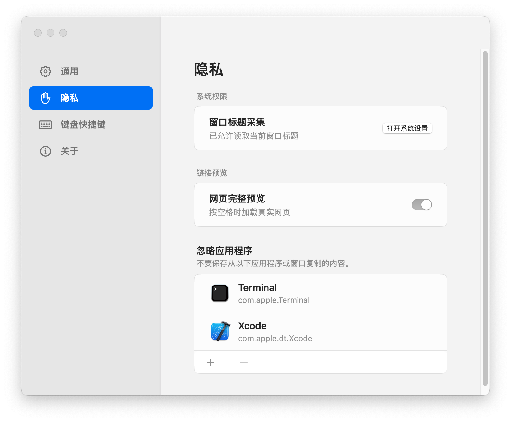

Recall
多类型内容按卡片呈现，扫一眼就能识别Text, links, code, images, and files stay scannable at a glance
ClipDock for macOS
文字、链接、代码、图片和文件，复制后自动进入 ClipDock。需要时一键唤出，搜索、固定、再次粘贴，不打断手头工作 ClipDock keeps text, links, code, images, and files close at hand, so you can search, pin, and paste them back without breaking flow

新内容自动进入最近列表；常用片段固定到 Pinboard。文字、链接、代码、图片按类型整理，打开就能判断该用哪一条 New clips flow into Recents automatically. Save the ones you reuse to Pinboard, with text, links, code, and images kept clear by type

ClipDock 把剪贴板历史整理成可扫描的原生面板。临时资料随时找回，高频内容固定保存，复制不再只是一次性动作 ClipDock turns clipboard history into a fast native panel: recover recent material, save frequent clips, and make copying feel less disposable
按类型、来源和时间快速定位刚复制的内容Find recent clips by type, source, and time
把模板回复、项目资料和代码片段固定到 PinboardPin templates, project notes, and snippets for repeated use
选中后直接粘贴回当前应用，少切窗口，少打断Pick a clip and paste it back into the app you are already using
围绕真实复制路径组织信息：刚复制的先找回，常用的固定住，敏感的留在本地 Built around the real clipboard loop: recover what is recent, pin what matters, and keep private material local
多类型内容按卡片呈现，扫一眼就能识别Text, links, code, images, and files stay scannable at a glance
把高频片段沉淀成轻量资料库，需要时直接取用Turn repeat clips into a lightweight library that is always ready
在当前应用唤出 ClipDock，找到内容后直接粘贴回去Open ClipDock from any app, find the right clip, and paste it back
剪贴板内容保存在本地。隐私不靠口号，而是默认方式Clipboard content stays on your Mac. Privacy is the default, not a pitch
模板回复、项目链接、发布命令、常用图片，都可以固定到 Pinboard。临时内容继续轻快流动，长期资料保持清楚有序 Pin reply templates, project links, release commands, and images you reuse often. Let temporary clips move quickly while durable material stays organized
ClipDock 以本地体验为核心。历史内容保存在本地，隐私控制清晰可见 ClipDock is built around a local macOS experience. History stays on this Mac, with privacy controls kept clear and visible

下载最新版本，使用 Command + Shift + X 唤出。让复制过的内容留得住、找得到、用得上Download the latest release, open it with Command + Shift + X, and turn copied material into something you can actually reuse